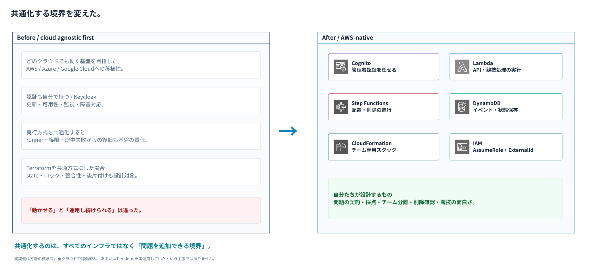

DEMO + ARCHITECTURE / 10 MINUTES
GameDayみたいなクラウド演習を
自分で作ってみた
クラウドアグノスティックに作り始めて、
AWSに任せるところを決めるまで。
冨田 進 / susumutomita
合同会社BULL / TenkaCloud
JAWS-UG横浜 #103 × SRE支部 · 2026年9月18日
AWSの公式教材ではない、独立したOSSプロジェクトです。
本編 01/10 | 目安 25秒
冨田です。GameDayのようなクラウド演習を、自分たちでも作って開催できる仕組みを作っています。今日は、暗号バトルを少しお見せしてから、クラウド非依存を目指した基盤を、なぜAWSのマネージドサービスへ寄せたのかを話します。
【出典】
https://jawsug-yokohama.connpass.com/event/403362/
https://github.com/susumutomita/TenkaCloud/blob/main/README.md
01 / WHY
欲しかったのは、何度でも開催できる仕組み。
問題を作るだけでは、チームで遊べる演習にならない。
02
環境を配る
チームごとのAWS環境
作成から削除まで
03
進行をそろえる
開始・締切・提出
自動採点・スコア
04
もう一度開く
同じ問題を再利用
別のチーム・別の会で
「問題づくり」と「開催する仕組み」を分ける。
本編 02/10 | 目安 50秒
きっかけは、演習を一度きりで終わらせず、自分の題材で何度も開催したかったことです。でも、問題を用意するだけでは足りません。チームごとに環境を配り、誰がどこまでできたかを採点し、参加者に画面を用意する必要があります。毎回これを作り直すのではなく、開催に共通する部分を基盤にしたい。この考えからTenkaCloudを作りました。
【出典】
https://github.com/susumutomita/TenkaCloud/blob/main/README.md
https://zenn.dev/bull/books/cloud-competition
02 / DEMO INTRO
その基盤に載せた題材の一つが、暗号バトル。
小さな数で計算し、公開するか、守るか、相手の情報を読むかを選ぶ。

ACP2026資料の教材UI。オンライン対戦やAWS環境の稼働証跡とは別です。
本編 03/10 | 目安 45秒
まず、何ができるかを見てください。これは暗号を題材にしたバトルです。計算して回答するだけではなく、急いで処理する代わりに情報を公開するか、相手の公開情報から秘密を求めるかを選びます。今日は暗号理論の説明ではなく、一つの題材を練習や対戦として載せられることをお見せします。ここに載せている画像は前回資料のローカル教材UIで、AWS環境の稼働証明とは別です。
【出典】
https://www.tenkacloud.com/acp2026/
https://github.com/susumutomita/TenkaCloudChallenge/tree/main/battles/ac26-crypto-battle
03 / DEMO — 90 SEC
計算を省くと、相手に材料を渡す。
 74秒 / 実ゲームロジックと参加者UIを使ったローカル実演。音声なし・日本語字幕付き。
74秒 / 実ゲームロジックと参加者UIを使ったローカル実演。音声なし・日本語字幕付き。
回答で +30点 → LEAKで +10点 → 相手が鍵を計算してHUNT（+8点、対象 −12点）。
同じローカル試合で実際に操作・判定。開発用の時計を1分進め、席をalphaからbravoへ切り替えています。AWS上の認証・永続化・公式スコアの実証は含みません。
動画の流れ：数独の置き換え表で4マスを埋めて30点。次のお題で元の数と暗号文を公開して10点。相手は公開された1 → 5から鍵4を計算し、HUNTが成功して8点、対象は12点減点。動画は発表ページから再生できます。
本編 04/10 | 目安 90秒
ここで約74秒の実演動画を再生します。実ゲームロジックと参加者UIを動かしたローカル開発環境です。
【0〜25秒】チームalphaがお題を開き、置き換え表を見て4マスを回答します。正解で30点が加算されます。
【25〜55秒】開発用の時計を1分進め、次のお題で「公開して答える」を選びます。計算を省いて10点を得る代わりに、元の数と暗号文の対応が公開されます。
【55〜80秒】bravo側に切り替え、公開材料の1から5への対応を読みます。5引く1で鍵4を求め、HUNTに入力します。正解で8点、攻撃されたalphaは12点減ります。
【80〜90秒】「問題・操作・判定を載せ、情報公開を判断に結びつけられる基盤です」と締めます。
動画が再生できない場合は、直下の得点の流れと補足の固定例で説明を続けます。この録画はAWS上の認証、永続化、公式スコアの実証ではありません。ゲーム内の小さい数や鍵は教材用で、認証情報ではありません。
【出典】
https://www.tenkacloud.com/acp2026/
https://github.com/susumutomita/TenkaCloudChallenge/tree/main/battles/ac26-crypto-battle
04 / BEFORE → AFTER
最初は、どのクラウドでも動かしたかった。
持ち運べる基盤を目指すほど、自分が運用する範囲も増えていった。

構成図を拡大する ↗左は当初の方針を示す概念図です。すべてのクラウドで同一基盤が稼働していたという意味ではありません。
本編 05/10 | 目安 50秒
最初は、AWSに限らず、いろいろなクラウドで動く基盤にしたいと考えていました。そこで、画面や競技APIだけではなく、認証やデータ、実行環境まで、自分で組み合わせて持つ方向へ進みます。初期の認証にはKeycloakを使った記録があります。この図はそのときの方針を説明する概念図で、全クラウドで実際に稼働していたという意味ではありません。動かす場所を自由にしたいという考えは自然ですが、その自由を支える運用も、自分で引き受けることになりました。
【出典】
https://github.com/susumutomita/TenkaCloud/issues/12
https://github.com/susumutomita/TenkaCloud/issues/1265
https://github.com/susumutomita/TenkaCloud/issues/1266
05 / THE TURN
「動かせる」と「運用し続けられる」は違った。
作りたいのはクラウド演習。増えていたのは、演習以外の運用対象。
認証を持つ
認証基盤の運用
更新・可用性
監視・障害対応
実行を共通化する
実行環境の運用
runner・権限
失敗時の復旧
状態を持つ
stateの運用
保存・ロック
整合性・後片付け
移植性を最大化するより、
自分が運用する範囲を小さくする。
Terraformの一般的な優劣ではなく、この演習基盤が引き受ける責任の選択です。
本編 06/10 | 目安 60秒
途中で、どこでも動くことと、運用し続けられることは別だと気づきました。認証を持てば更新や可用性を考えます。共通の実行基盤を持てば、その基盤の障害対応が必要になります。例えばTerraformを問題実行の共通方式にすると、実行するrunnerだけでなく、stateの保存、ロック、途中失敗の回復、後片付けまで基盤の責任です。これはTerraformが悪いという話ではありません。この演習基盤で、どこまでを自分が引き受けたいかという話です。そこで、基盤のために使う運用労力を減らし、問題や競技体験へ戻す方針にしました。
【出典】
https://github.com/susumutomita/TenkaCloud/pull/400
https://github.com/susumutomita/TenkaCloud/issues/1265
https://github.com/susumutomita/TenkaCloud/issues/1266
06 / AFTER — AWS-NATIVE
運用の土台はAWSへ。競技の設計は自分で。
運営基盤とチーム別AWSアカウントを分離。同じ図を拡大し、3つの経路を順に見る。
別ページで構成図全体を拡大する ↗管理者はCognitoとAPI Gateway、参加者はチームキーと専用Lambda Function URL。問題配置はEventBridge → Step Functions → Lambda → AssumeRole → CloudFormation。
本編 07/10 | 目安 100秒
現在のAWS構成です。今日は単一の開催主体で使うLiteモードに絞っています。左が参加者や運営者に提供する画面とAPIで、右が実際の演習を行うチーム別のAWSアカウントです。管理者の認証はCognitoを使い、参加者は別のチームキーで入ります。配置処理はStep FunctionsとLambdaで進め、STSのAssumeRoleとExternalIdを使って、対象チームのアカウントへアクセスします。実際のリソースの作成と削除はCloudFormationのスタックとして扱います。基盤側にはイベントやチーム、配置状況などを保存し、既定のAWS-native構成ではDynamoDBを使います。
ここで任せたのは、認証サービス、関数の実行、ワークフロー、データの保存、スタックのライフサイクルです。一方で、誰に何を許すか、何を正解とするか、チームを混ぜないかは自分たちの設計として残ります。図は役割をまとめた論理構成で、すべてのAPIや全リソースを並べた詳細配線図ではありません。LiteのtenantIdはlocalですが、ローカルPC実行とは別物です。
【出典】
https://github.com/susumutomita/TenkaCloud/blob/main/README.md
https://github.com/susumutomita/TenkaCloud/blob/main/DEPLOYMENT_GUIDE.md
https://github.com/susumutomita/TenkaCloud/blob/main/infrastructure/lib/tenkacloud-lite/tenkacloud-lite-stack.ts
https://github.com/susumutomita/TenkaCloud/blob/main/infrastructure/lib/admin-console-hosting.ts
https://github.com/susumutomita/TenkaCloud/blob/main/docs/running-costs.md
管理・配置API、チームAの演習環境、参加者APIを順に拡大します。管理者APIと参加者用の2つのFunction URLは別経路です。DynamoDBは「認証 / データ / 監視」内の1か所にまとめて表示しており、競技状態もここへ保存します。読み書きの詳細配線は省略しています。「全体図」でアカウント間の関係に戻ります。
07 / THE BOUNDARY
全部を共通化しない。問題の「契約」をそろえる。
クラウド固有の機能は、固有のまま使う。
共通の情報
metadata.json
問題の説明・表示
採点ルール
画面の接続
AWS固有の実体
template.yaml
CloudFormation
チームの環境を
作成・削除
題材に固有のUI
portal/
任意のReactコンポーネント
暗号バトルなどの
題材固有の操作画面
共通化するのは、すべてのインフラではなく
問題を追加できる境界。
本編 08/10 | 目安 60秒
クラウドごとの違いを、無理に全部隠す必要はありませんでした。共通にするのは、基盤が問題をどう受け取り、どう表示し、どう採点するかという境界です。現在のAWS問題は、metadata.jsonに表示や採点の情報、template.yamlにCloudFormationの構成を持ち、必要ならportalディレクトリにReactの画面を追加します。問題作者は、基盤を毎回作り直さずに題材を足せます。将来ほかのクラウドへ広げる場合も、そのクラウドのネイティブな実行方式を使う方針です。AWS、Azure、Google Cloudで同じ問題が既に動くという意味ではありません。
【出典】
https://github.com/susumutomita/TenkaCloud/blob/main/README.md
https://github.com/susumutomita/TenkaCloud/issues/1265
https://github.com/susumutomita/TenkaCloud/issues/1266
08 / SRE TAKEAWAYS
マネージドでも、演習の安全設計は任せられない。
減らすのは基盤の運用。手放さないのは、競技と参加者に対する責任。
01 / 境界
壊してよい範囲
チーム別AWSアカウント
必要なIAM権限
AssumeRole + ExternalId
02 / 終わり方
失敗と削除を追う
配置状況を記録
失敗時の対応を決める
削除完了まで確認
03 / 正しさ
判定を信用できる場所へ
採点・状態更新はサーバー
返す情報をチーム別に制限
監査に使う記録
「運用しない」ではなく、「運用する場所を選ぶ」。
本編 09/10 | 目安 75秒
マネージドサービスへ寄せたから、運用がなくなったわけではありません。壊すことを含む演習だからこそ、まず壊してよい範囲を決めます。チームごとにAWSアカウントを分け、クロスアカウントのアクセスには必要な権限とExternalIdを使う。次に、開始できたことと、最後まで片付いたことを分けて確認します。失敗した配置や削除を見落とさない状態表示と記録が必要です。そして、得点を決めるのはサーバー側です。参加者の画面を信用して採点したり、他チームの秘密を配ったりしない。AWSに実行や保存を任せた分、こうした演習の安全性と体験に集中したい、という整理です。
【出典】
https://github.com/susumutomita/TenkaCloud/blob/main/README.md
https://github.com/susumutomita/TenkaCloud/blob/main/DEPLOYMENT_GUIDE.md
https://github.com/susumutomita/TenkaCloud/issues/1265
https://github.com/susumutomita/TenkaCloudChallenge/tree/main/battles/ac26-crypto-battle
09 / TAKE HOME
作りたいのは、
クラウドで学ぶ体験。
基盤は任せる。問題と、競技の面白さを作る。
あなたの現場の障害を、次の問題に。
Apache-2.0 / 独立OSSプロジェクト
本編 10/10 | 目安 45秒
まとめです。最初は、クラウドに依存しない基盤を作ろうとしました。しかし、持ち運べることを追うほど、自分が運用するものも増えました。いまは土台をAWSへ任せて、共通化するところを問題の追加と競技の体験に絞っています。作りたかったのは、クラウドそのものではなく、クラウドで学ぶ場でした。TenkaCloudはOSSで公開しています。みなさんの現場の障害や学びを、次の問題として一緒に作れたらうれしいです。ありがとうございました。
【出典】
https://github.com/susumutomita/TenkaCloud/blob/main/README.md
https://github.com/susumutomita/TenkaCloud
https://zenn.dev/bull/books/cloud-competition
APPENDIX / MODE BOUNDARIES
Lite と SaaS と ローカルは、別の実行形態。
AWS / Lite
開催主体は1テナント
運営画面・参加者ポータル
チーム別AWS環境へ配置
AWS / SaaS
複数組織への提供
オンボーディング・pooled / silo
SBT Control Planeを追加
ローカル
AWS不要のドリル
ローカル採点・進捗保存
AWS配置とは別の経路
tenantId=local は、ローカルPC実行ではない。
本編の図はAWS-nativeのLite構成に絞っています。実行モードや認証方式を混ぜないための補足です。
本編終了後の補足・Q&A用
Q&A用。LiteはAWS上の単一テナント構成で、SaaS Control Planeを持ち込まない。SaaSモードではテナントのオンボーディング、pooled / siloなどを加える。ローカル練習はAWSを使わない別経路。デモ教材の画面が表示されたことと、AWS配置・オンライン対戦の検証結果を混ぜない。Tursoは選択可能だが、現行文書でlive verification未完了のため、本編のAWS-native代表図には入れていない。
【出典】
https://github.com/susumutomita/TenkaCloud/blob/main/README.md
https://github.com/susumutomita/TenkaCloud/blob/main/DEPLOYMENT_GUIDE.md
https://github.com/susumutomita/TenkaCloud/blob/main/infrastructure/lib/tenkacloud-lite/tenkacloud-lite-stack.ts
https://github.com/susumutomita/TenkaCloud/blob/main/docs/running-costs.md
APPENDIX / DEMO FALLBACK
デモに戻れないときは、この実画面で続ける。
公開されるのはかけらの番号と値。HUNTで答えるのは、元の秘密。

3 × 2 − 3 × 5 + 3 = −6 ≡ 1（mod 7）
番号1・2・3の値が2・5・3という固定の説明例。ACP2026資料の教材UIで、ライブ対戦の稼働証跡ではありません。
本編終了後の補足・Q&A用
HUNTの固定例。同じチームの同じ秘密を分けた、異なる番号のかけらが必要。番号1が2、番号2が5、番号3が3なら、係数を使って3×2−3×5+3=-6、法7で1を得る。提出するのは公開されたかけらではなく元の秘密1。採点APIには接続していない前回教材画面。JAWS本編ではこの数式まで説明しなくてよい。
【出典】
https://www.tenkacloud.com/acp2026/
https://github.com/susumutomita/TenkaCloudChallenge/tree/main/battles/ac26-crypto-battle
APPENDIX / REFERENCES
実装・設計判断の出典
スナップショットとしての発表資料です。最新の動作・設定はリポジトリを確認してください。
本編終了後の補足・Q&A用
確認基準。採用理由の大枠は登壇者本人の今回の説明。Keycloakの初期利用はIssue #12、Cognito対応はPR #400、Terraformを共通実行基盤にしない判断はIssue #1265と#1266で確認。本文では「特定の障害が何回起きた」「工数が何%削減された」「Azure/GCPで稼働済み」など、裏付けのない成果を主張していない。現在の本番リソース一覧を取得したわけではなく、現行コード・公開ドキュメントに基づく論理構成。
【出典】
https://jawsug-yokohama.connpass.com/event/403362/
https://github.com/susumutomita/TenkaCloud/blob/main/README.md
https://github.com/susumutomita/TenkaCloud/blob/main/DEPLOYMENT_GUIDE.md
https://github.com/susumutomita/TenkaCloud/blob/main/infrastructure/lib/tenkacloud-lite/tenkacloud-lite-stack.ts
https://github.com/susumutomita/TenkaCloud/blob/main/infrastructure/lib/admin-console-hosting.ts
https://github.com/susumutomita/TenkaCloud/blob/main/docs/running-costs.md
https://github.com/susumutomita/TenkaCloud/issues/12
https://github.com/susumutomita/TenkaCloud/pull/400
https://github.com/susumutomita/TenkaCloud/issues/1265
https://github.com/susumutomita/TenkaCloud/issues/1266
https://zenn.dev/bull/books/cloud-competition
https://www.tenkacloud.com/acp2026/
https://github.com/susumutomita/TenkaCloudChallenge/tree/main/battles/ac26-crypto-battle
https://github.com/susumutomita/TenkaCloud